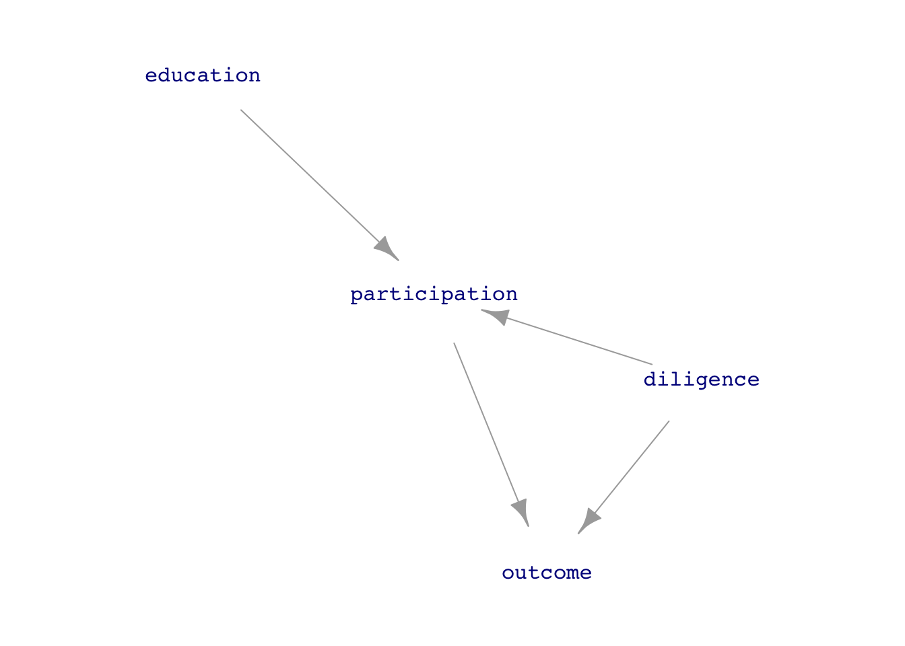

Lesson 32: Worksheet
Note: If you installed the {math300} R package before Apr. 12, 2023, update it by giving this command in your console:
remotes::install_github("dtkaplan/math300)Note 2: You’ll be using dag_make() in this worksheet. You’ll be given the commands you need. The exams, however, will not require you to understand how to use dag_make(); it’s just for demonstration purposes here.
This worksheet is about random assignment to treatment in an experiment, as well as blocking, and how they make the treatment uncorrelated with a random covariate or, in the case of blocking, the covariate used for blocking.
The general setting is that we have a system in which output y is possibly influenced by x and some covariates and we want to use randomization or blocking to assign treatment. For the sake of definiteness, we’ll work with job_dag, which implements a simple confounder. You’ll have to run the following DAG to
The relationship of interest is the direct link between participation in the training program and the person’s outcome in terms of getting a job.
With the diagram and formulas for job_dag in hand, we can see that the person’s diligence is a confounder for the relationship participation \(\longrightarrow\) outcome. In a realistic situation, however, we don’t know for certain what is the data-generation process; any DAG that we have is simply a hypothesis. In addition, in a realistic situation we might not have any way to measure diligence: it is a “lurking variable.”
QUESTION: Is education a confounder of the link between participation and outcome?
ANSWER
education is not a confounder. There is no path from participation to outcome via education.
Task 1: Carry out an “observational” study by generate a sample of size \(n=400\) from job_dag and analyzing it simply to estimate the effect of participation on outcome. The following chunk does the analysis in two different ways: 1) the fractions of the participators and non-participators who have a successful outcome and 2) a regression technique that gives confidence intervals easily:
Observations <- sample(job_dag, size=400)
# Technique 1
Observations |> group_by(participation) |>
summarize(frac = mean(outcome == "job"))# A tibble: 2 × 2
participation frac
<chr> <dbl>
1 enrolled 0.4
2 not 0.312# Technique 2
Observations |> mutate(job = zero_one(outcome, one="job")) |>
lm(job ~ participation, data=_) |>
conf_interval()# A tibble: 2 × 4
term .lwr .coef .upr
<chr> <dbl> <dbl> <dbl>
1 (Intercept) 0.331 0.400 0.469
2 participationnot -0.182 -0.0884 0.00565Interpret the output from the two analysis techniques. On the face of things, do the data indicate that the job training program helps people to get a job? Do the two analysis techniques give different estimates of the effect size?
Answer
Your results will involve sampling variation, but usually the chunk’s output will show that the fraction of the participants who get a job is roughly 10-20% higher than the non-participants. The regression model gives an exactly equivalent result; the coefficient participantnot will exactly conform to the difference in proportions from the first analysis technique. The confidence interval on the participationnot coefficient will have both ends greater than zero, so we are statistically justified to conclude that there is positive effect size. (If your results are inconsistent with this description, that is an accident of sampling variation. Run the data simulation and analysis again two or three times to see that the description above is generally correct.)
A reasonable critique of the results from Task 1 is that there may be confounding. Other factors might be influencing the outcome than participation. Since we know the DAG that generated the data, it’s obvious that a “other factor” is the confounder diligence. But in a realistic situation we could only speculate that such a confounders exist. Unfortunately, in a realistic situation, we might have not data on the hypothetical confounders (like diligence), so we could not adjust for them.
Task 2: education seems like a reasonable candidate for a confounder. Repeat the analysis using education as a covariate. Does adjusting for education make a noticable difference in the conclusions?
ANSWER
Observations |> mutate(job = zero_one(outcome, one="job")) |>
lm(job ~ participation + education, data=_) |>
conf_interval()# A tibble: 3 × 4
term .lwr .coef .upr
<chr> <dbl> <dbl> <dbl>
1 (Intercept) 0.332 0.401 0.470
2 participationnot -0.186 -0.0918 0.00276
3 education -0.0317 0.0172 0.0660 education has no systematic effect on the effect size with respect to participation.
Adjusting for measured covariates is a good thing to do, but it does not deal with the possibility of unmeasured covariates. We need a better study than
Task 3 Turn the study into an experiment. You’ll do this by intervening in the system, changing the DAG so that participation is set randomly. The following chunk will create a new DAG with particpation.
job_experiment_dag <- dag_intervene(
job_dag,
participation ~ binom(0, labels=c("enrolled","not"))
)
Exp_data <- sample(job_experiment_dag, size=400)Generate a sample of size \(n=400\) from job_experiment_dag. Then carry out the modeling analysis on the experimental data as in Tasks 1 & 2.
QUESTION: With the experimental data, do you get the same kind of result as with the observational data.
ANSWER
Task 4. You couldn’t do this in a realistic situation, but since in the simulation we have measured diligence, we can incorporate it into the data analysis of the observational data. What does adjusting for diligence do in aligning the observational results from the experimental results?
ANSWER